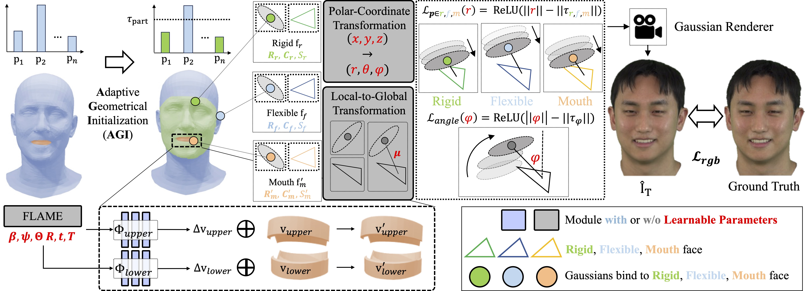

We propose GeoAvatar, a novel adaptive Geometrical Gaussian Splatting framework for 3D head avatar, and release a new monocular video dataset, DynamicFace. Given an input novel animation, GeoAvatar generates robust and high textured 3D head avatars.
We propose GeoAvatar, a novel adaptive Geometrical Gaussian Splatting framework for 3D head avatar, and release a new monocular video dataset, DynamicFace. Given an input novel animation, GeoAvatar generates robust and high textured 3D head avatars.
Despite recent progress in 3D head avatar generation, balancing identity preservation, i.e., reconstruction, with novel poses and expressions, i.e., animation, remains a challenge. Existing methods struggle to adapt Gaussians to varying geometrical deviations across facial regions, resulting in suboptimal quality. To address this, we propose GeoAvatar, a framework for adaptive geometrical Gaussian Splatting. GeoAvatar leverages Adaptive Geometrical Initialization (AGI), an unsupervised method that segments Gaussians into rigid and flexible sets for adaptive offset regularization. Then, based on mouth anatomy and dynamics, we introduce a novel mouth structure and the part-wise deformation strategy to enhance the animation fidelity of the mouth. Finally, we propose a regularization loss for precise rigging between Gaussians and 3DMM faces. Moreover, we release DynamicFace, a video dataset with highly expressive facial motions. Extensive experiments show the superiority of GeoAvatar compared to state-of-the-art methods in reconstruction and novel animation scenarios. The dataset and pre-trained models will be released after the publication.

1) By integrating a large language model, a text-to-speech model, and speech-driven 3D facial animation modules to our proposed GeoAvatar framework, we demonstrated a real-time interactable digital human demo.
2) Our GeoAvatar is a promising solution for virtual presentations with a speech-driven 3D facial animation module. Point and drag your mouse to see the results!